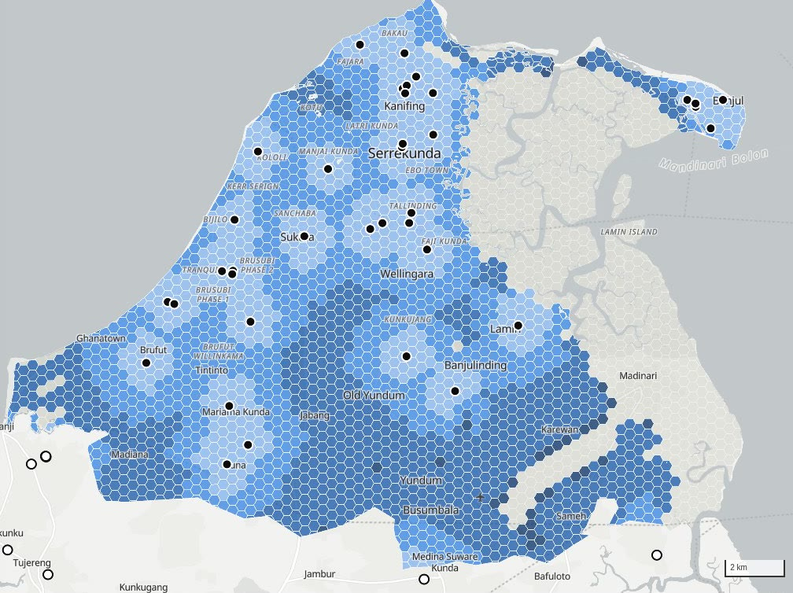
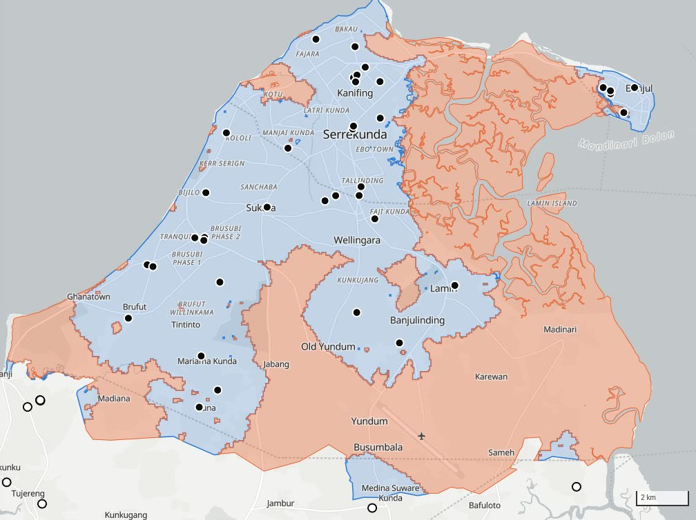

I wanted to know how far people in Greater Banjul live from the nearest health facility or school, measured as travel time along the roads rather than distance on a map. It is also a first step towards a flood early-warning tool I would like to build: the same database can later take flood layers and show which facilities and neighbourhoods would be cut off.
I loaded the OpenStreetMap roads and facilities for Banjul, Kanifing and Kombo North (283 km², plus a 5 km
buffer so that facilities just outside still count) into PostgreSQL with PostGIS and pgRouting. OpenStreetMap was
missing several public health centres, such as Bakau and Brufut, so I added them from the public facility list of
Maina et al. (2019), matching by name because its coordinates can be a kilometre off. That gives 37 health facilities
and 81 schools. Travel times come from one Dijkstra search per facility type that starts from all facilities at once;
for driving it runs on the reversed network, so one-way streets are used in the direction people travel. Each
50 m cell of land takes the time of its nearest road, and 160,489 building footprints from Google Open Buildings
show how many buildings fall within each time. A FastAPI service returns GeoJSON, a MapLibre map shows it, and the
whole system starts with docker compose up.
About three in four buildings (75.8%) are within a 30-minute walk of a health facility. Of the roughly 38,900 that are not, about 33,600 are in one area in the east of Kombo North, between Lamin, Yundum and Banjulinding. By car, nearly everywhere is within 15 minutes when traffic flows freely, but traffic matters: if all driving speeds are 40% lower, the share of buildings within five minutes of a health facility falls from 71% to 40%. Schools are generally closer than health facilities, although OpenStreetMap probably does not include every school.
| Share of buildings within | 15 min walk | 30 min walk | 60 min walk | 5 min drive | 10 min drive | 15 min drive |
|---|---|---|---|---|---|---|
| Health facility | 37.6% | 75.8% | 97.1% | 70.7% | 93.5% | 99.8% |
| School | 60.0% | 92.0% | 99.8% | 87.1% | 99.6% | 99.8% |
Walking at 4.5 km/h; driving at free-flow speeds by road type. Walking at 4.0 or 5.0 km/h changes the 30-minute figure for health facilities to 71.3% or 79.2%.


pgRouting's built-in option for starting from many facilities gave slightly wrong times here (1,175 seconds where the right answer was 1,162). I only noticed because the pipeline re-checks a sample of times with a separate Dijkstra call on every run, so I replaced it with one extra start node joined to every facility. Buffering every reachable road to draw the service areas took three minutes per map; the 50 m grid does all 30 maps in about two minutes. The routing SQL is tested on a small invented road grid where every answer can be checked by hand.
The results are only as complete as OpenStreetMap: some schools are probably missing and some facilities are tagged as the wrong type. Speeds are fixed by road type, with no traffic, public transport or rainy-season effects, and the walk from a house to the nearest road (up to 150 m) is not included. Buildings stand in for people, and every facility counts the same whatever its size. These are estimates, not a basis for real planning decisions.
Data: © OpenStreetMap contributors (ODbL), Geofabrik extract of 13 November 2026; Maina, J. et al. (2019), A spatial database of health facilities managed by the public health sector in sub-Saharan Africa, Scientific Data 6, 134 (CC BY 4.0); Google Open Buildings v3; OCHA COD-AB boundaries for The Gambia (CC BY-IGO). Basemap: OpenFreeMap, © OpenMapTiles. The published layers are under the ODbL.
Software: PostgreSQL 17, PostGIS 3.5, pgRouting 3.8, osm2pgrouting, GDAL, Python with FastAPI, MapLibre GL JS, Docker Compose, pytest and GitHub Actions.